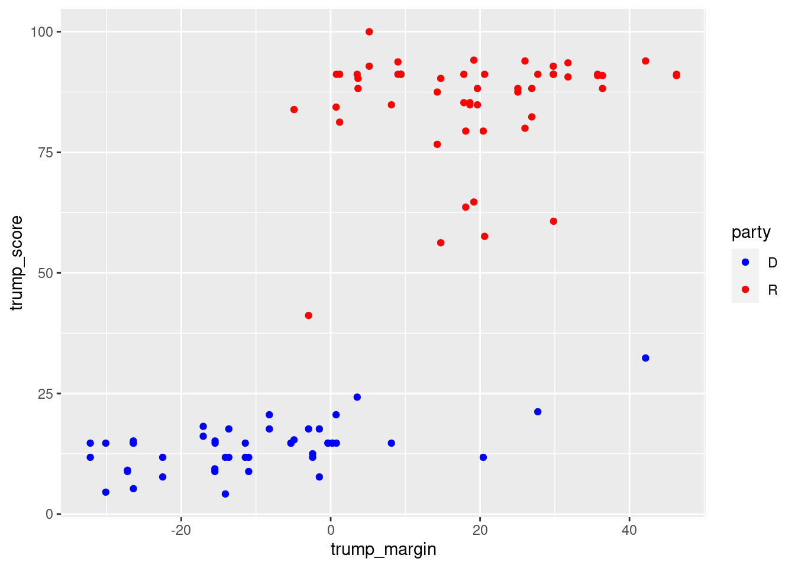
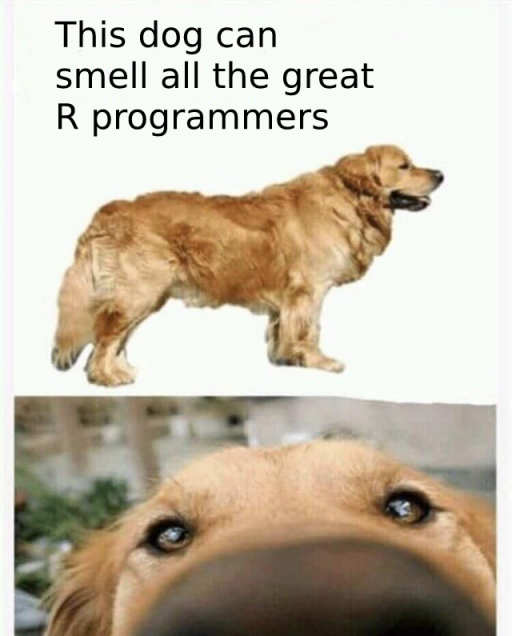

01 - R básico
Si quieres correr este script localmente, acá puedes descargar el proyecto comprimido en .zip. Paquetes que necesitas tener instalados antes de comenzar:
tidyverse.
Este es un script de R Markdown, una forma de registrar nuestro código de R. Sabemos esto por por la extensión .Rmd y todas las opciones que están fijadas más arriba (por ahora no nos concentraremos demasiado en ellas).
Antes de comenzar, juguemos un poco con las opciones de RStudio. Vamos a Tools > Global Options > Appearance.
Introducción: comandos y código
En los scripts de R Markdown el texto plano (como este) nos permite añadir comentarios, explicaciones, etc. Cuando ocupemos código debemos insertarlo en “chunks” o bloques de código, como veremos a continuación.
Haremos un bloque de código para ocupar R como una calculadora simple. Podemos correr el código línea por línea con Ctrl/Cmd + Enter, si nuestro teclado está en dicha parte del script. Para correr el chunk completo puedes presionar en el pequeño botón de “Play” en la parte superior derecha o presionar Ctrl/Cmd + Shift + Enter.
## [1] 6## [1] 684408850Para crear un chunk, debes presionar Ctrl/Cmd + Alt + i. Prueba a crear un chunk y calcula alguna operación aritmética. Tu código:
En R podemos crear objetos, que guardarán información para ser utilizada en operaciones siguientes:
## [1] 5Por ejemplo, podemos hacer aritmética con este nuevo objeto:
## [1] -12¿Cuál es la diferencia entre este último comando y el siguiente?
Eliminemos este segundo objeto, utilizando la funcion rm() (remove):
Si quisiéramos reiniciar la sesión (comenzando todo desde cero), podríamos presionar Session > Restart R) y clickear en la escoba del panel “Environment” de RStudio (superior derecho).
Paquetes
Los paquetes añaden nuevas funciones a R. Hay que cargarlos en cada nueva sesión, con el comando library().
El tidyverse es un paquete que ocuparemos en todas nuestras clases, que añade una gran cantidad de funciones al lenguaje.
Ojo! library() solo nos permite cargar paquetes que hayamos instalado. Aquí en RStudio Cloud yo instalé el tidyverse para todas/os, pero por defecto habría que instalarlo.
Probemos a utilizar otro paquete, janitor:
## Error in library(janitor) : there is no package called 'janitor'Debemos instalarlo. Basta con instalar los paquetes una vez, luego podremos cargarlos en cada sesión que queramos. La mayoría de los paquetes se instalan con el comando install.packages("paquete"):
Por cierto, podemos saber que R está trabajando gracias a RStudio. Mientras el paquete se instala, fíjate que hay una pequeña línea (¿color?) en la parte izquierda del código.
Terminada la instalación, carguemos el nuevo paquete:
(Ejercicio A)
Prueba a instalar un paquete llamado “fun”. Luego, cárgalo y corre el siguiente comando: random_password(). ¿Qué hace?
Recuerda registrar todo el proceso en el script! Tu código:
Comandos básicos y tipos de objeto en R
En esta sección veremos vectores, data frames (marcos de datos) y listas.
Vectores
Lo siguiente es un vector numérico:
## [1] 7 9 19 2 9El siguiente comando creará un objeto (mi_vector). ¿Qué contendrá este nuevo objeto?
Veamos algunos comandos básicos a aplicar en números y vectores numéricos.
## [1] -3## [1] 2.236068## [1] 1.609438## [1] 4.857143## [1] 4.140393## [1] 7## [1] 34## [1] -3## [1] 9Todas las funciones que hemos visto simplemente tomaban un objeto, sin más. La mayoría de las funciones son más complejas: requieren más de un objeto o nos permiten integrar más opciones.
Les damos instrucciones específicas a las funciones por medio de argumentos (hasta ahora, solo vimos funciones con el inicio de argumento “x =”).
## [1] -3 2 5 6 7 8 9## [1] 9 8 7 6 5 2 -3Nota que podemos añadir saltos de línea entre argumentos:
## [1] 9 8 7 6 5 2 -3Importante. Si ponemos los valores de los argumentos en orden, podemos evitar escribir los argumentos mismos:
## [1] 9 8 7 6 5 2 -3Por cierto, podemos consultar el archivo de ayuda de una función fácilmente. Ahí encontraremos los distintos argumentos explicados:
Los vectores también pueden ser de otros tipos:
## [1] "Manzana" "Pera" "Naranja" "Damasco"## [1] 7## [1] TRUE FALSE TRUE TRUE## [1] TRUE FALSE TRUE TRUE(Ejercicio B)
De nuevo ocupa la función random_password() del paquete fun, pero esta vez con el argumento length = 10. Prueba con diferentes valores del argumento! Tu código:
Data frames (marcos de datos)
Los data frames son objetos centrales en R, sin duda los que más utilizaremos. Vamos a cargar uno simple:
df_trump_scores <- read_csv("datos/trump_scores_202003_cong116.csv") # esta función es del tidyverse!## Parsed with column specification:
## cols(
## last_name = col_character(),
## state = col_character(),
## party = col_character(),
## trump_score = col_double(),
## trump_margin = col_double()
## )El “Trump Score” es el porcentaje de votaciones en las que un senador/a ha estado alineado/a con Donald Trump. El “Trump Margin” es el margen que Trump obtuvo en el estado del senador/a en cuestión.
Fuente: FiveThirtyEight (2020). Descargado el 11 de marzo de 2020.
## # A tibble: 100 x 5
## last_name state party trump_score trump_margin
## <chr> <chr> <chr> <dbl> <dbl>
## 1 Alexander TN R 80 26.0
## 2 Blunt MO R 84.8 18.6
## 3 Brown OH D 14.7 8.13
## 4 Burr NC R 90.3 3.66
## 5 Baldwin WI D 14.7 0.764
## 6 Boozman AR R 88.2 26.9
## 7 Blackburn TN R 93.9 26.0
## 8 Barrasso WY R 91.2 46.3
## 9 Bennet CO D 15.4 -4.91
## 10 Blumenthal CT D 11.8 -13.6
## # … with 90 more rows## # A tibble: 6 x 5
## last_name state party trump_score trump_margin
## <chr> <chr> <chr> <dbl> <dbl>
## 1 Alexander TN R 80 26.0
## 2 Blunt MO R 84.8 18.6
## 3 Brown OH D 14.7 8.13
## 4 Burr NC R 90.3 3.66
## 5 Baldwin WI D 14.7 0.764
## 6 Boozman AR R 88.2 26.9También podemos inspeccionar un data frame clickeando su nombre en el panel superior derecho, pestaña Environment.
Las columnas de un data frame son vectores!
## [1] "Alexander" "Blunt" "Brown" "Burr" "Baldwin" "Boozman" "Blackburn" "Barrasso" "Bennet" "Blumenthal" "Booker" "Braun" "Cantwell" "Cardin" "Carper" "Crapo"
## [17] "Collins" "Capito" "Cornyn" "Casey" "Cassidy" "Coons" "Cotton" "Cramer" "Cruz" "Cortez Masto" "Durbin" "Daines" "Duckworth" "Enzi" "Ernst" "Feinstein"
## [33] "Fischer" "Graham" "Grassley" "Gillibrand" "Gardner" "Hirono" "Heinrich" "Hoeven" "Harris" "Hassan" "Hyde-Smith" "Hawley" "Inhofe" "Johnson" "Jones" "Klobuchar"
## [49] "King" "Kaine" "Kennedy" "Leahy" "Lankford" "Lee" "Loeffler" "Markey" "McConnell" "Menendez" "Moran" "Murray" "Murkowski" "Murphy" "Merkley" "Manchin"
## [65] "McSally" "Portman" "Peters" "Paul" "Perdue" "Reed" "Roberts" "Risch" "Rubio" "Rounds" "Rosen" "Romney" "Sanders" "Schumer" "Shelby" "Stabenow"
## [81] "Shaheen" "Scott" "Sinema" "Schatz" "Sasse" "Sullivan" "Smith" "Scott" "Thune" "Toomey" "Tester" "Tillis" "Udall" "Van Hollen" "Wicker" "Wyden"
## [97] "Whitehouse" "Warner" "Warren" "Young"## [1] 80.000000 84.848485 14.705882 90.322581 14.705882 88.235294 93.939394 91.176471 15.384615 11.764706 4.166667 94.117647 15.151515 15.151515 11.764706 93.548387 41.176471 93.939394 91.176471 20.588235 84.848485 14.705882
## [23] 82.352941 90.909091 93.750000 11.764706 18.181818 79.411765 16.129032 90.909091 91.176471 14.705882 88.235294 76.666667 91.176471 7.692308 83.870968 14.705882 20.588235 91.176471 4.545455 14.705882 91.176471 85.294118
## [45] 90.909091 91.176471 21.212121 7.692308 17.647059 14.705882 88.235294 14.705882 88.235294 63.636364 100.000000 8.823529 91.176471 11.764706 57.575758 14.705882 56.250000 17.647059 11.764706 32.352941 91.176471 84.848485
## [67] 14.705882 60.714286 92.857143 8.823529 91.176471 90.625000 81.250000 92.857143 12.500000 79.411765 5.263158 11.764706 91.176471 14.705882 14.705882 87.500000 24.242424 11.764706 87.500000 90.322581 17.647059 91.176471
## [89] 91.176471 84.375000 11.764706 88.235294 17.647059 14.705882 85.294118 8.823529 9.375000 14.705882 9.090909 64.705882Producto de esto, podemos operar en ellas usando las funciones que aprendimos antes.
(Ejercicio C)
Calcula la mediana de los Trumps Scores y la mediana de los Trump Margins. Tu código:
Ejemplos de análisis con data frames
En general, la forma de data frame nos es útil para correr análisis.
Aquí un gráfico exploratorio (no miraremos demasiado la sintaxis):
ggplot(data = df_trump_scores,
mapping = aes(x = trump_margin, trump_score, color = party)) +
geom_point() +
scale_color_manual(values = c("blue", "red"))
Aquí una regresión lineal, que busca estimar el Trump Score de un senador/a de acuerdo a dos predictores: el margen de Trump en su estado y su partido político:
##
## Call:
## lm(formula = trump_score ~ trump_margin + party, data = df_trump_scores)
##
## Residuals:
## Min 1Q Median 3Q Max
## -40.151 -1.952 1.599 4.487 17.239
##
## Coefficients:
## Estimate Std. Error t value Pr(>|t|)
## (Intercept) 15.71390 1.40190 11.209 < 2e-16 ***
## trump_margin 0.17650 0.06248 2.825 0.00574 **
## partyR 66.13619 2.50530 26.399 < 2e-16 ***
## ---
## Signif. codes: 0 '***' 0.001 '**' 0.01 '*' 0.05 '.' 0.1 ' ' 1
##
## Residual standard error: 8.623 on 97 degrees of freedom
## Multiple R-squared: 0.9463, Adjusted R-squared: 0.9452
## F-statistic: 854.5 on 2 and 97 DF, p-value: < 2.2e-16Listas
Las listas son objetos que pueden contener otros objetos, sin importar su tipo!
De la siguiente forma podemos acceder a los elementos de una lista, similar a lo que hicimos antes con vectores:
## [[1]]
## # A tibble: 100 x 5
## last_name state party trump_score trump_margin
## <chr> <chr> <chr> <dbl> <dbl>
## 1 Alexander TN R 80 26.0
## 2 Blunt MO R 84.8 18.6
## 3 Brown OH D 14.7 8.13
## 4 Burr NC R 90.3 3.66
## 5 Baldwin WI D 14.7 0.764
## 6 Boozman AR R 88.2 26.9
## 7 Blackburn TN R 93.9 26.0
## 8 Barrasso WY R 91.2 46.3
## 9 Bennet CO D 15.4 -4.91
## 10 Blumenthal CT D 11.8 -13.6
## # … with 90 more rows## # A tibble: 100 x 5
## last_name state party trump_score trump_margin
## <chr> <chr> <chr> <dbl> <dbl>
## 1 Alexander TN R 80 26.0
## 2 Blunt MO R 84.8 18.6
## 3 Brown OH D 14.7 8.13
## 4 Burr NC R 90.3 3.66
## 5 Baldwin WI D 14.7 0.764
## 6 Boozman AR R 88.2 26.9
## 7 Blackburn TN R 93.9 26.0
## 8 Barrasso WY R 91.2 46.3
## 9 Bennet CO D 15.4 -4.91
## 10 Blumenthal CT D 11.8 -13.6
## # … with 90 more rows¿Cuál es la diferencia entre estos dos últimos comandos? El primero devuelve una nueva lista con solo un elemento, el tercero de la lista original. El segundo, en tanto, devuelve el contenido del tercer elemento de la lista.
Sintaxis de R Markdown
En el texto de nuestros documentos podemos escribir en *cursiva* o **negrita**. También podemos insertar [links](https://www.google.com/). Usualmente cuando queremos hablar de paquetes o funciones dentro de nuestro texto los escribimos entre tildes invertidos: `tidyverse`, `mean()`.En el texto de nuestros documentos podemos escribir en cursiva o negrita. También podemos insertar links. Usualmente cuando queremos hablar de paquetes o funciones dentro de nuestro texto los escribimos entre tildes invertidos: tidyverse, mean().
Crear tablas también es relativamente simple. Con texto:
| Nombre | Descripción |
|---|---|
| Juan | Un estudiante |
| Marta | Una estudiante |
O a partir de un data frame, con código:
| last_name | state | party | trump_score | trump_margin |
|---|---|---|---|---|
| Alexander | TN | R | 80.00000 | 26.0057009 |
| Blunt | MO | R | 84.84848 | 18.6371170 |
| Brown | OH | D | 14.70588 | 8.1295744 |
| Burr | NC | R | 90.32258 | 3.6552285 |
| Baldwin | WI | D | 14.70588 | 0.7643432 |
| Boozman | AR | R | 88.23529 | 26.9209780 |
Importante. Por favor noten que la primera tabla ocupa sintaxis de R Markdown en vez de código de R, por lo que no está dentro de un chunk!
También podemos incluir ecuaciones, escritas entre signos de peso con la sintaxis de \(\LaTeX\). Un ejemplo: \(\hat{\beta}=(X'X)^{-1}X'Y\) ($\hat{\beta}=(X'X)^{-1}X'Y$).
Título de prueba
Subtítulo
Se pueden generar el título y subtítulo de arriba con las siguientes líneas:
Una lista
* Artículo de lista uno
* Artículo de lista dos
+ Artículo derivado (nota los cuatro espacios antes del símbolo "+").
* Artículo de lista tres- Artículo de lista uno
- Artículo de lista dos
- Artículo derivado (nota los cuatro espacios antes del símbolo “+”).
- Artículo de lista tres
Otra lista (ahora ordenada)
- Artículo de lista uno
- Artículo de lista dos
- Artículo de lista tres
Nota que los números de la lista aparecerán solos en el documento compilado.
Una imagen
Podemos insertar una imagen, referenciando su ubicación en nuestra carpeta del proyecto:

Compilar nuestro documento
Podemos compilar nuestro código a un documento utilizando el botón “Knit” en RStudio, o presionando Ctrl/Cmd + Shift + K.
(Ejercicios D y E)
Crea un vector numérico, que vaya desde 4 hasta 109. Luego, calcula su media y mediana. Recuerda crear tu(s) chunk(s) con Ctrl/Cmd + Alt + i.
Para terminar, inserta la imagen “rstudio.png” de la carpeta “imgs” en este documento, después de un subtítulo “Mi imagen”. Aprovecha de describirla brevemente, haciendo uso de la negrita para destacar palabras.
Siguiente script
Pasemos brevemente a ver el script 01b.
Nota: este es un script .R, cuyo contenido es el siguiente:
# Brevemente, este es un script "tradicional" de R, sin R Markdown.
# La extensión es .R.
# Nota que aquí los comentarios van con # inicial, pues se asume que todo el resto es código.
# Podemos hacer exactamente lo mismo que en el formato de R Markdown, con (al menos)
## dos diferencias. Primero, el código se correrá en la consola, no inmediatamente después
## de cada comando. Segundo, no se puede compilar esto a un documento.
3 + 3
library(tidyverse)
df_trump_scores <- read_csv("datos/trump_scores_202003_cong116.csv")
mean(df_trump_scores$trump_score)
median(df_trump_scores$trump_score)
# De todas formas, los scripts .R son útiles para cosas rápidas y mucha gente los ocupa.
# En el curso ocuparemos mayoritariamente scripts .Rmd.